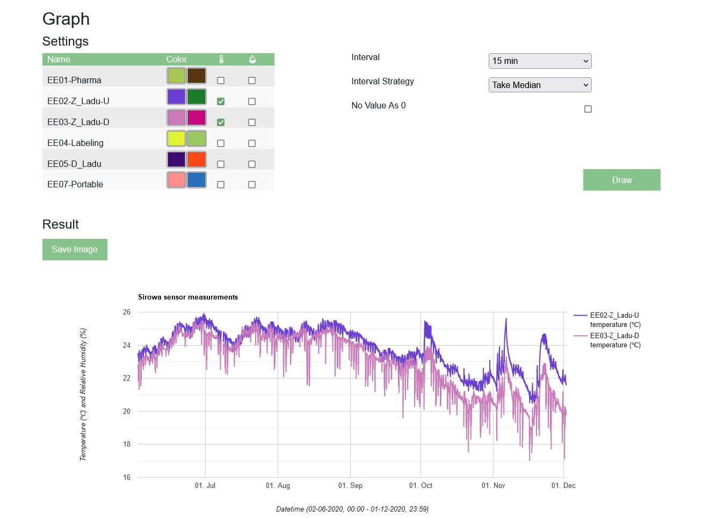
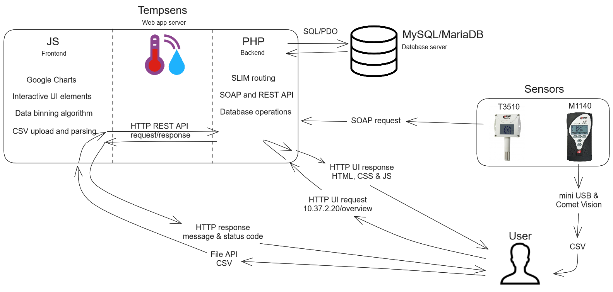
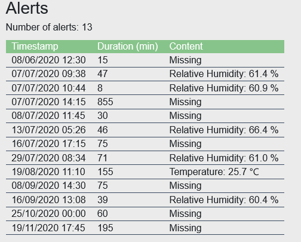

Tempsens
Developed entire full stack Sirowa warehouse temperature monitoring web application named Tempsens to monitor product storage compliance with temperature requirements. Monitoring is required by Ravimiamet for storage of medicinal goods.

Two types of Comet sensors are used: stationary and portable. Stationary sensors connect to Tempsens SOAP API. Portable sensors can be connected to user machine by mini-USB. Sensor data can then be downloaded as a CSV file though Comet Vision application. The CSV can subsequently be uploaded in Tempsens front-end application that uses REST API internally for saving the parsed data.
Data flow diagram

Flow of the application for stationary sensors consists of data being sent to Tempsens application through SOAP API and the application in turn saving it a MySQL/MariaDB database. Mobile sensors do not have a SOAP interface and require users to upload CSV files through the Tempsens application. In order to download the CSV file from a portable sensor a mini-USB and computer with Comet Vision application installed is required.
The application flow for the user is based on initial server-side rendering and subsequent JavaScript based interactivity. For the user this means that when loading the selected period of data, the entire page will be refreshed. Site interactivity logic allows:
- Uploading CSV data and saving it into database though the backend via REST API standard.
- Defining visualization settings and behavior for chart drawing.
- Visualizing a line chart according to user settings.
- Downloading chart image PNG and sensor data CSV.
Internally sensor create, update and delete operations and uploading parsed CSV data is implemented using REST API standard. The application routing is implemented with Slim library and charting is done with Google Charts. Bootstrap is used for interactivity like modals and collapsible elements.
Algorithms
Application uses binning and clustering algorithms to help visualize data.
Binning serves both technical and user specific needs. Binning algorithm creates uniformed period buckets that contain multiple sensor readings. This speeds up chart drawing time for large periods and also increases resulting chart readability. The buckets also allow different visualization behavior like average value, most extreme value and show alert (value 0) on missing value.
const getBuckets = (dateFrom, dateTo, step) => {
let buckets = [];
let bucketCurrentDate = dateFrom;
for (let i = 1; ; i++) {
let bucketNextDate = dateFrom.add(step * i, 'minutes');
if (bucketNextDate >= dateTo) break;
buckets.push({
startDate: bucketCurrentDate,
endDate: bucketNextDate,
row: [] // will contain y value of the bucket for selected sensors
});
bucketCurrentDate = bucketNextDate;
}
return buckets;
}
Large data sizes demand bucket filtering operation to be optimized. This means reducing time complexity from O(n^2) to O(n) by making use of ordered array properties.
function filterSortedArrayValuesBetweenDates(sortedByDateObjArr, before, after, low) {
// sortedByDateObjArr.filter(x => before <= x.date && after > x.date); // too slow
let result = [];
while (low < sortedByDateObjArr.length) {
let obj = sortedByDateObjArr[low];
if (after <= obj.date) break;
if (before <= obj.date) result.push(obj);
low++;
}
return {
result: result,
low: low
};
}
Clustering allows chaining multiple readings for more accurate way to show sensor alerts for both 'value out of bounds' errors and 'missing value' errors.
public function createChain(array $sortedByDateObjArr, callable $isPartOfSameChainCallback): array {
$result = [];
$chain = [];
// ... ommitted special cases for size 1 and 0
for ($i = 0; $i < sizeof($sortedByDateObjArr) - 1; $i++) {
$current = $sortedByDateObjArr[$i];
$next = $sortedByDateObjArr[$i + 1];
$state = $this->getState($current, $next, $isPartOfSameChainCallback, sizeof($chain));
$isLast = $i === sizeof($sortedByDateObjArr) - 2;
switch ($state) {
case "isPartOfSameChain":
// leads to isPartOfSameChain or isPartOfChainBreak
if (empty($chain)){ $chain[] = $current; }
$chain[] = $next;
if ($isLast) { $result[] = $chain; }
break;
case "isPartOfChainBreak":
// leads to isPartOfSameChain or isNotPartOfChain
$result[] = $chain;
$chain = [];
if ($isLast) { $result[] = [$next]; }
break;
case "isNotPartOfChain":
// leads to isPartOfSameChain or isNotPartOfChain
$result[] = [$current];
if ($isLast) { $result[] = [$next]; }
break;
}
}
return $result;
}
This is what the final result looks like in the UI.

Last words
The finished application solved all business requirements needed to overview warehouse temperature.
Although it looked like a relatively simple application at first, the amount of code needed to display a chart proved shocking. The algorithms needed to solve user needs certainly proved to be a interesting and rewarding challenge to solve.